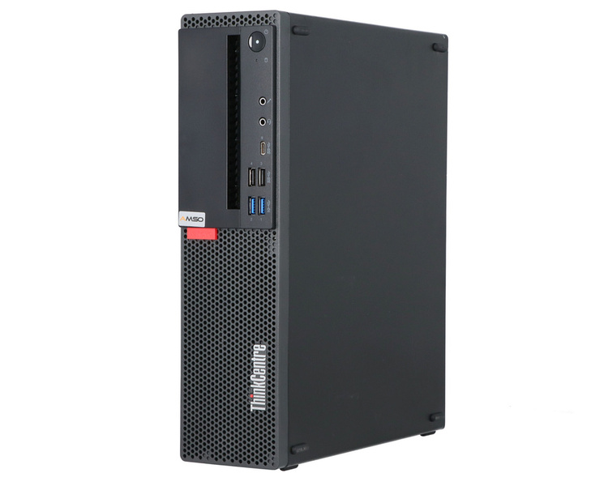
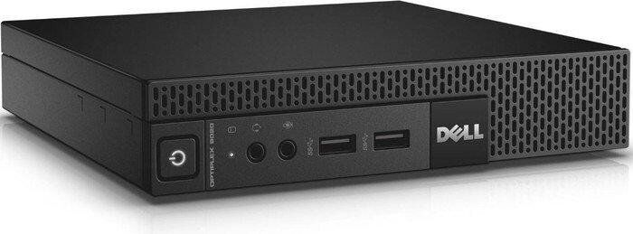
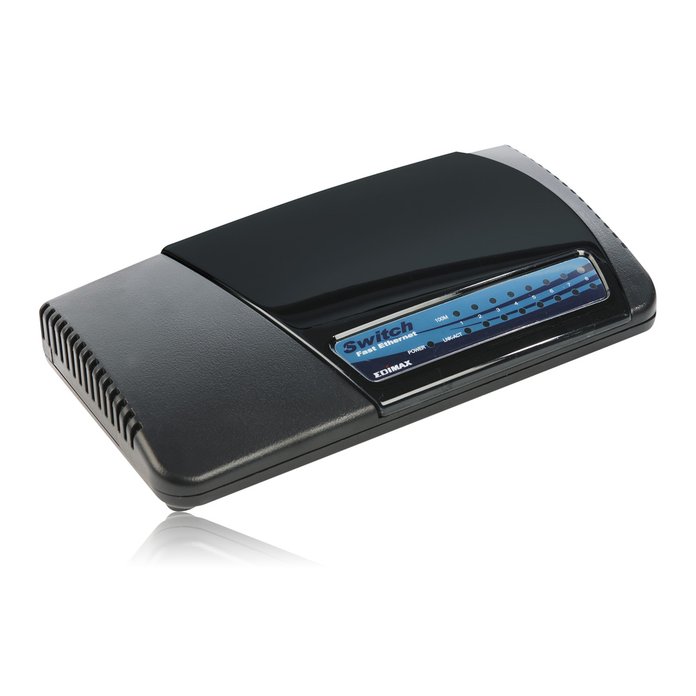

Hardware
I managed to get a good bargain for the two most important devices in my network during my OJT in Manila, it's amazing how it's ALOT more cheaper in the cities, that and because it's also second hand still, the price compared to how powerful it is was worth it, the rest of my devices I already had laying around.
First off, let's start with the most significant devices in my network, although I'm not going into the finer details of their specs since I already listed their model name

ThinkCentre M920
This is the most important device in my network, this acts as my server for hosting most of the services I'm using. I was initially worried that the storage wasn't enough and the specs however I overestimated that what is labeled as hardware requirements for systems assumed that it will be used for enterprise situations, to which I am only using it for myself meaning the applicatios are running not as heavily especially Wazuh

Optiplex 9020 Micro
This acts as my firewall / DHCP server / DNS Forwarder / NAT, I wanted to fit a NIC card inside however it was out of my budget so I settled with using a USB to Ethernet Adapter for my LAN port, I'm not handling any big data or speed necessary to need a dedicated NIC card so far it's working perfectly. The specs of it is equal to my server, I actually wanted to make both into a cluster but I opted out the idea since seperate function was better, also because it would be a hassle to open my server, hub and firewall just so I can use the firewall. The specs are underutilized despite running alongside Suricata and AdGuard
